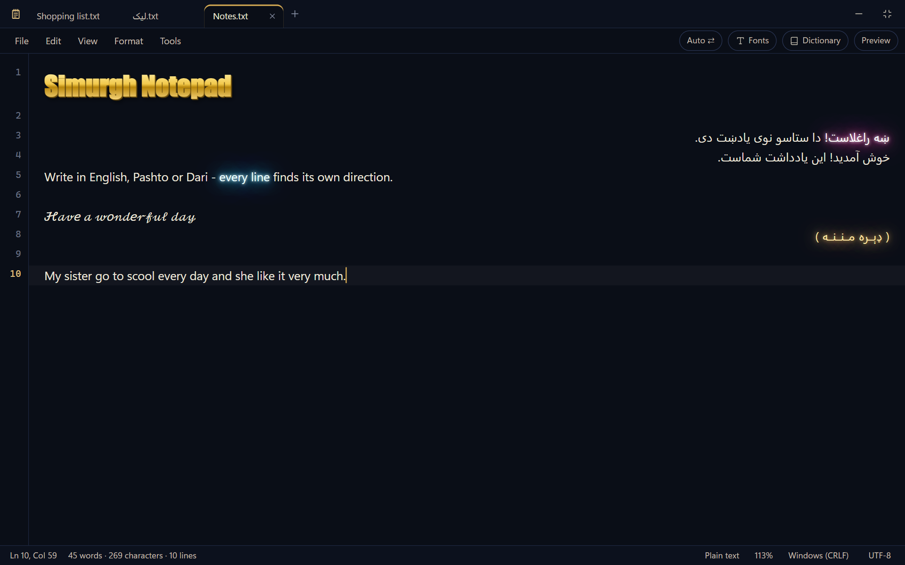
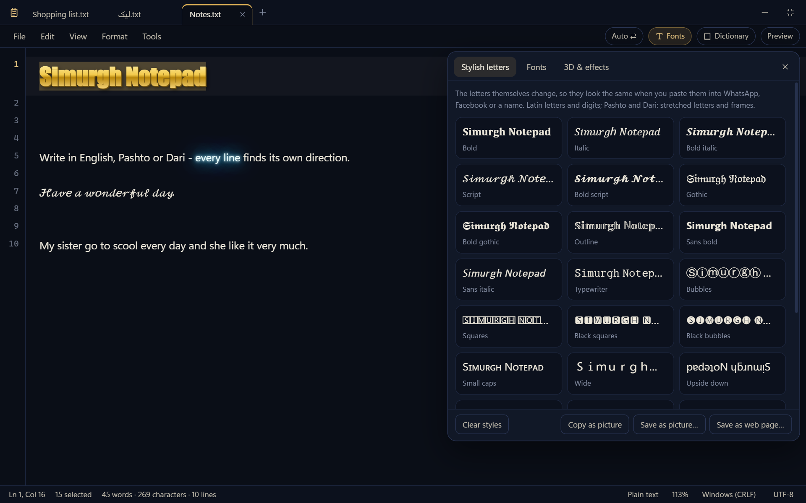
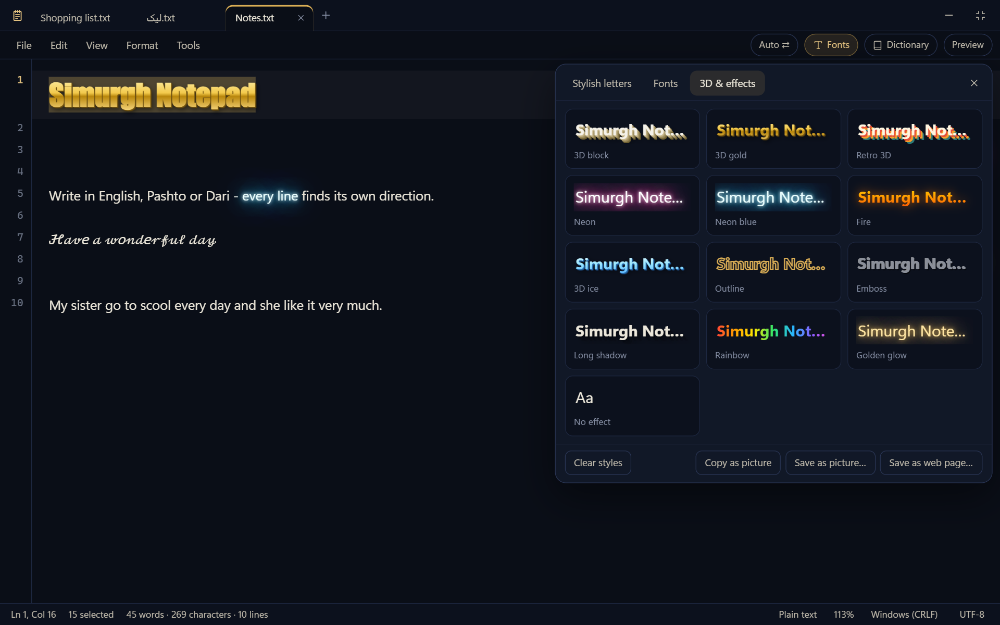
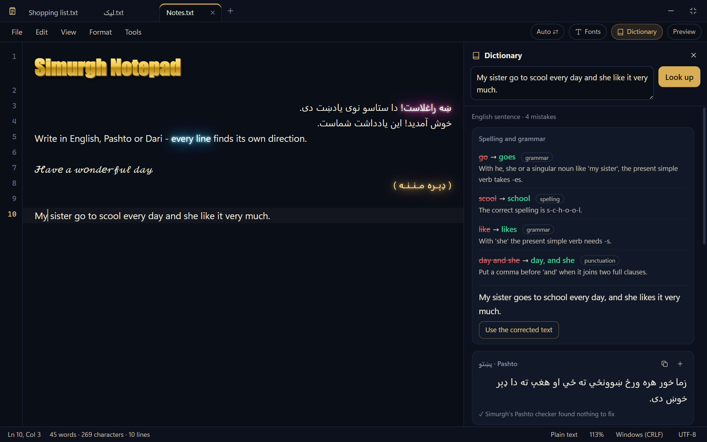
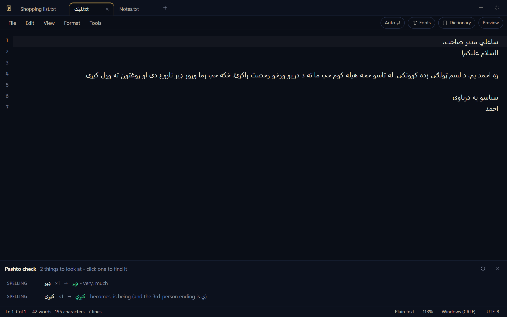

سیمرغ ډاونلوډ کړئ
د وینډوز ۱۰ او ۱۱ (۶۴-بټه) لپاره.
هره کلي یوازې یو ځل کار کوي. کله چې یوه کلي وکارول شي، موږ نېټه، نږدې ځای (ښار او هېواد، چې ستاسو د انټرنېټ له پتې معلومېږي — پته پخپله نه ساتل کېږي) او ستاسو عامل سیسټم او براوزر ساتو.
کلي نه لرئ؟ له هغه چا یې وغواړئ چې سیمرغ یې درسره شریک کړ.
که وینډوز ووایي “Windows protected your PC”، پر More info او بیا پر Run anyway کلیک وکړئ.

د سیمرغ نوټ پیډ
کله چې سیمرغ پیلېږي، لومړی خپل نوټ پیډ پرانیزي — پوره سکرین، پرته له بل څه. د سیمرغ نورو برخو ته د تګ لپاره Esc یا Ctrl+Alt+S کېکاږئ.
ښکلي توري
یو څو کلمې یا ټول متن وټاکئ، پر Fonts کلیک وکړئ او یوه بڼه غوره کړئ: پنډ، کوږ، لاسي لیک، ګوتیک، حبابونه او نور. پخپله توري بدلېږي، نو کله یې چې په واټساپ، فېسبوک یا خپل نوم کې ولګوئ، همداسې ښکاري. پښتو او دري ته اوږده توري (کشیده) او چوکاټونه هم شته.

فونټونه او 3D متن
ټاکلو کلمو ته ستاسو د کمپیوټر هر فونټ ورکړئ، لوی یې کړئ، یا یې 3D کړئ: طلایي 3D، 3D بلاک، نیون، اور، یخ، رنګارنګ او نور. د انځور په توګه یې کاپي کړئ او هر ځای یې ولګوئ، یا یې د انځور یا وېب پاڼې په توګه خوندي کړئ. بڼې له متن سره ساتل کېږي.

قاموس او ګرامر
پر یوه کلمه یا جمله F7 کېکاږئ. انګلیسي، پښتو او دري ته یې ژباړي، د املا او ګرامر تېروتنې پیدا کوي او هره یوه په ساده ډول تشریح کوي، په یوه کلیک یې سموي، او ښيي چې جمله څنګه جوړه شوې ده. یوه کلمه خپلې ماناوې او بېلګې هم لري.

انګلیسي، پښتو او دري په یوه پاڼه
هره کرښه خپل لوری پخپله پیدا کوي: پښتو او دري له ښي لوري او انګلیسي له کیڼ لوري. Tools → Check Pashto یا Check Dari عامې تېروتنې پیدا کوي — د ی پنځه ډولونه، په پښتو متن کې دري کلمې، په دري کې نیمه فاصله — او هرې یوې ته مو بیايي.

نور هم: ټبونه، موندل او بدلول، د مارک ډاون مخکتنه، لمریزه افغاني نېټه (Shift+F5)، د کرښو ترتیبول او یوځای کول، لویول، چاپ — او ستاسو لیکنه ساتل کېږي که څه هم پرته له خوندي کولو یې وتړئ.